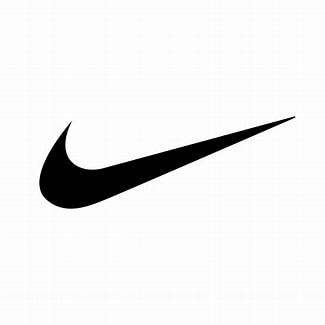
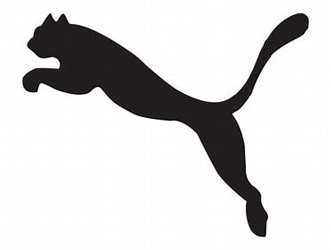

Adidas es una de las marcas deportivas más reconocidas y exitosas en todo el mundo. Fue fundada en 1949 por Adolf Dassler, quien se dedicaba a fabricar zapatos deportivos en su pequeña fábrica en Alemania.
Nike- La empresa fue fundada el 25 de enero de 1964 como "Blue Ribbons Sports" por Phil Knight y Bill Bowerman,y se convirtió oficialmente en Nike Inc., el 30 de mayo de 1971.
PUMA impulsa incansablemente el deporte y la cultura al crear los productos más rápidos para los atletas más rápidos del mundo. Desde 1948, PUMA ha extraído fuerza y credibilidad de su herencia en los deportes.

Umbro es una empresa inglesa fabricante de calzado fundado por Wallace y Harold Humphreys en Wilmslow cerca de Mánchester, ropa deportiva y otros productos relacionados con el fútbol, el deporte en general y la moda, siendo sus productos vendidos en más de 90 países de todo el mundo. Su sede principal está ubicada en Cheadle, Gran Mánchester.